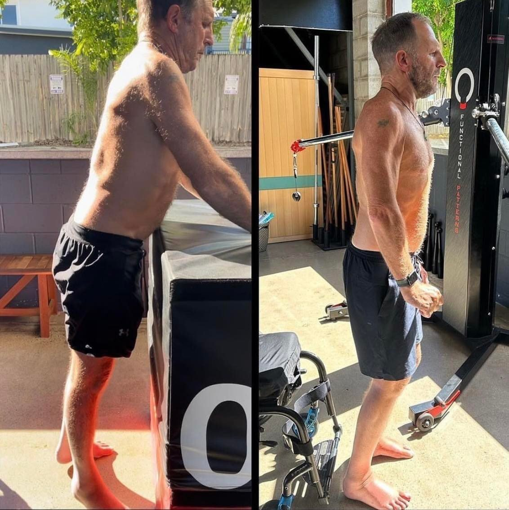
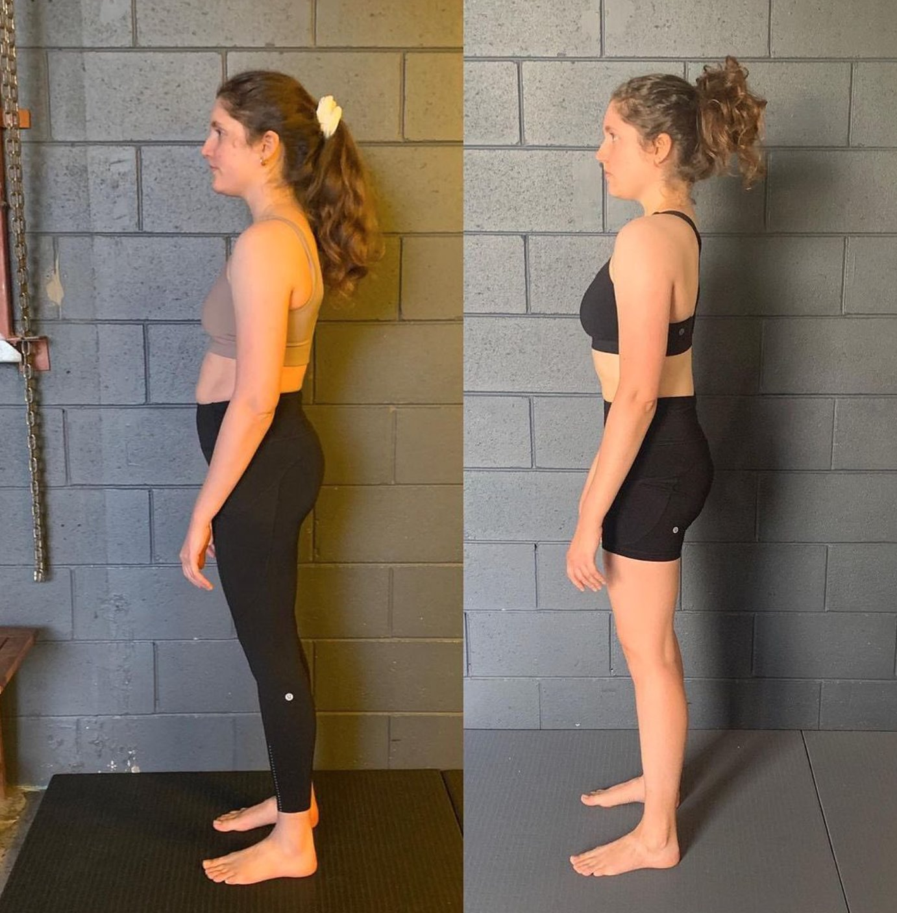

Fascia is a connective tissue that surrounds and separates muscles, bones, and organs in the body. Recent research has shown that fascia is not just a passive tissue but rather a dynamic and responsive organ that plays a critical role in maintaining homeostasis and communicating with other systems in the body, including the nervous and endocrine systems.
The fascia is now recognized as an important neuro-endocrine organ because it contains a network of sensory nerve fibers and receptors that respond to mechanical, chemical, and thermal stimuli. These sensory nerves and receptors are closely linked to the autonomic nervous system (ANS), which regulates many of the body's involuntary functions, such as heart rate, digestion, and respiration.
Research has also shown that fascia contains a variety of cells and molecules that can produce and respond to hormones and other signaling molecules. For example, adipose tissue (fat cells) within the fascia can secrete hormones such as leptin and adiponectin, which can affect metabolism and appetite regulation.
Additionally, the fascia contains myofibroblasts, which are cells that can contract and produce extracellular matrix (ECM) proteins such as collagen and elastin. Myofibroblasts are also capable of producing and responding to hormones such as growth factors and cytokines, which can affect tissue repair and regeneration.
Furthermore, the fascia has been shown to have a role in pain and inflammation, which are regulated by the nervous and endocrine systems. Abnormal tension or adhesions within the fascia can stimulate pain receptors and trigger the release of inflammatory mediators, leading to chronic pain and dysfunction.
How Does Biomechanics Affect Fascia?
Biomechanics refers to the study of how mechanical forces affect the human body, including how movement and posture affect the musculoskeletal system. Fascia, a connective tissue that surrounds and connects muscles and other structures in the body, plays an important role in the transmission and distribution of mechanical forces generated by movement and posture. Therefore, biomechanics can have a significant impact on the function and health of the fascia.
The fascia is a dynamic tissue that responds to mechanical stresses and strains by changing its properties and structure. For example, when a muscle contracts, the fascia surrounding the muscle will deform and transmit the force to other structures in the body. If this force is excessive or repeated over time, it can lead to changes in the fascia, such as increased stiffness, fibrosis, and adhesions.
Biomechanics also affect the alignment and balance of the body, which can impact the tension and strain on the fascia. Poor posture or imbalances in muscle strength can lead to abnormal loading of the fascia, which can cause changes in its properties and structure. Over time, this can lead to chronic pain and dysfunction.

Multiple Sclerosis Client Re-Hydrating Their Fascia Using Movement (They could not stand unassisted in the first image)
How Does Fascia Affect Biomechanics?
Moreover, the fascia can also affect biomechanics. For example, changes in the fascia's properties and structure can alter the way that forces are transmitted through the body during movement. This can affect the efficiency of movement and potentially lead to compensations and imbalances in the musculoskeletal system.
How Does Functional Patterns Address Fascia?
Most people we see have very dehydrated fascia from constant improper mechanical loading (AKA poor movement patterns). How do you rehydrate fascia once it has dried out? There are long-term and short-term solutions with varying degrees of commitment & difficulty.
Short-Term Methods For Hydrating Fascia
-
Drink plenty of water: Staying hydrated is essential for maintaining the health of all tissues in the body, including fascia. Aim to drink at least 8 glasses of water per day, and more if you are engaging in exercise or other activities that cause you to sweat.
-
Use a foam roller or massage ball: Foam rollers and massage balls can help to hydrate the fascia by applying pressure and stimulating blood flow. Use these tools to massage areas of the body that feel stiff or tight.
-
Get regular bodywork: Massage, myofascial release, and other forms of bodywork can help to hydrate the fascia by releasing tension and improving circulation. Consider getting regular bodywork to support the health of your fascia.
-
Eat a healthy diet: Eating a diet rich in fruits, vegetables, meats, fish and healthy fats can help to support the health of all tissues in the body, including fascia. Avoid processed foods, sugar, and other inflammatory foods that can contribute to dehydration and tissue damage.
The Long-Term, Lasting Solution for Hydrating Your Fascia
Dehydrated fascia happens for a reason. If you do not address the underlying causes of your dehydrated fascia, it will never hold the necessary hydration levels to keep you out of pain. If poor biomechanical loading got you in this position, the only true way out is to address your relationship with gravity.
By getting a gait analysis, you will be able to identify how your body is interacting with the ground, itself and space in general. You will see various things going wrong - compressions, abnormal shifts, asymmetrical rotations etc. These are the things you need to correct in order to move how your body was designed to move. Once you move better, your fascial hydration issues will be a thing of the past. It’s not complicated with the help of a trained Functional Patterns Practitioner.

BEFORE: Dry & Decompressed - AFTER: Pain-Free, Hydrated Tissue + Decompressed
To see more case studies of people hydrating their tissue for the long-term and getting out of pain, click the button below.